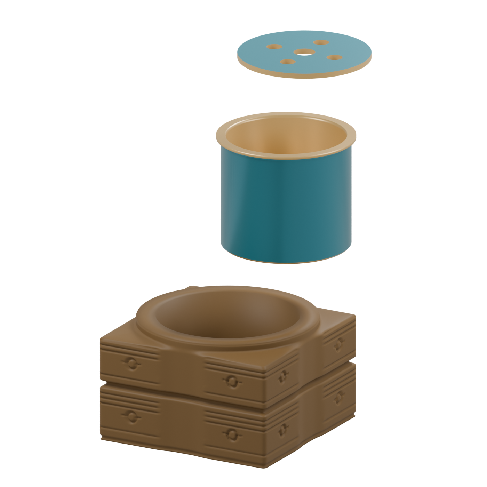
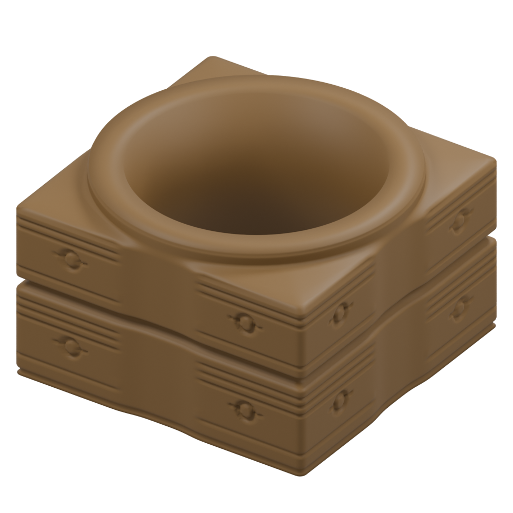
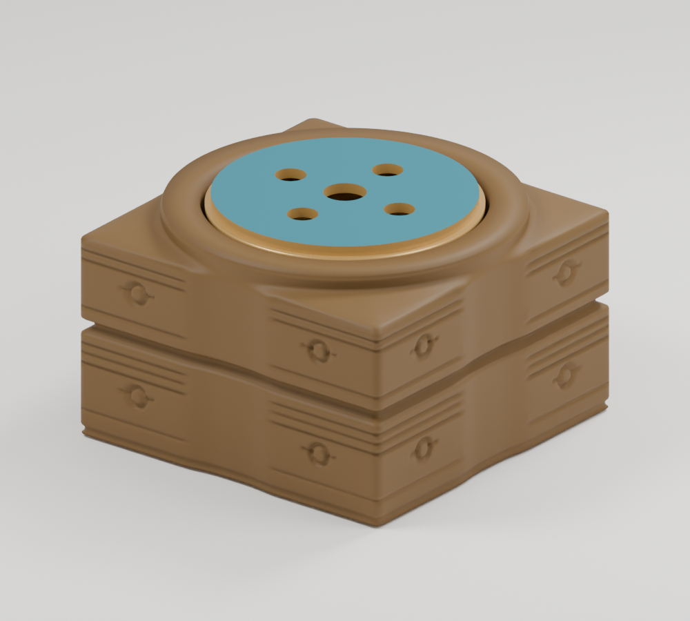

清代后配内胆说明性重建 · 非文物实拍
02先观其形。

03内外之间。
转动视角，把构件分开，再放回整体。资料可随时打开；想收入观玉记的线索，请在「重识」中勾选。

可以先阅读说明，或进入三维观察
04看见的，
与读到的。
把眼前的形和来源放在一起读。分看姿态显露孔壁，只说明题刻位置关系。
- 看到什么
- 方形外廓围着圆孔。这里可看到内壁，但没有制作题字。
- 资料怎样说
- 馆方说明内壁题诗与外部纹饰方向相反，并记述乾隆认作「辋头」、配胆用为香熏。
- 不能独自证明什么
- 模型与数字转录不能证明实物字形、行款及全周定位，也不能还原史前器义。
读题诗的文字线索
辋头于古不为重，重以历今千百年。
《题汉玉辋头瓶》节选，据故宫目录数字转录。诗题的「汉」是乾隆当时的认识，不代表今天将玉琮断为汉代。
诗题中的「辋头」连接着馆方记述的后用理解；不能以诗题证明玉琮的原始用途。题诗文字与数字转录不能替代实物字形、行款及刻痕核验。
核对馆方题诗原文05一器之中，
两个时代。
琮体属于良渚文化。
杯体与盖，是清乾隆时期的后配构件。
06一个形，
几次理解。
以下按阅读顺序列出三个阶段，间距不代表年代长度。切换仅选定现态模型的固定姿态，不重建所谓原貌。
良渚 · 制作
从玉琮主体的外方内圆与两节轮廓开始。整体姿态仍包含后配构件；不是良渚时期原貌。原始用途不能仅凭后来香熏用法断定。
并读三个阶段
良渚制作：玉琮主体；原始器义与制作目的仍需更多研究。
清乾隆使用：館方记载认作「辋头」并配胆作香熏；分看现态三实体，以辨明后用构件。
当代说明：从现有目录、描述与照片制作说明性模型；正面视角与颜色帮助阅读，细部仍有缺口。
07看过之后。
08以玉喻人。
瑕不掩瑜
——《礼记·聘义》节选
展开完整句、字义与本页读法
瑕不掩瑜，瑜不掩瑕，忠也。
底本常见「揜」字，通「掩」；本页采用通行字。瑕指玉的斑点，瑜指玉的光彩；原文以玉比德。
本页的当代读法：留意长处，也不忽略局限，容许观察逐步改变。这是阅读邀请，不能据此推断良渚时期的器义，也不自动成为你的观点。
09我的观玉记。
初见、重识、寄语。
把这一次的观看，收在同一张笺里。
10看过之后，
还可以再来。
每次看见，可以略有不同。重新阅读会保留当前记录；清空是另一个可以取消的动作。
清空初见、重识、寄语与所选线索，并移除本机记录？此操作会取消本机保存。
看见形体，
不等于确认史实。
这是依资料制作的说明性重建，非扫描或测绘复原。整体比例依故宫目录公布尺寸；可见纹饰仅作概括，未核实背面不补造纹样。细部、配胆、显示颜色与反光为简化或估计，不能用模型判断真实磨损、玉质或工艺。
页面图像均由本项目模型渲染。首屏三构件竖向分看、形制图仅显示琮体，均为观察构图，不是文物拆卸步骤。三维暂不可用时，仍可切换四个图片视角并阅读三个来源说明；题刻入口不暗示可见真实题字。
资料核验更新至2026-10-12。馆方目录、展览说明与古籍转录按链接阅读；本页没有使用馆方照片作为公开展示素材。
玉记 · 目录比例 · 来源约束的说明性重建